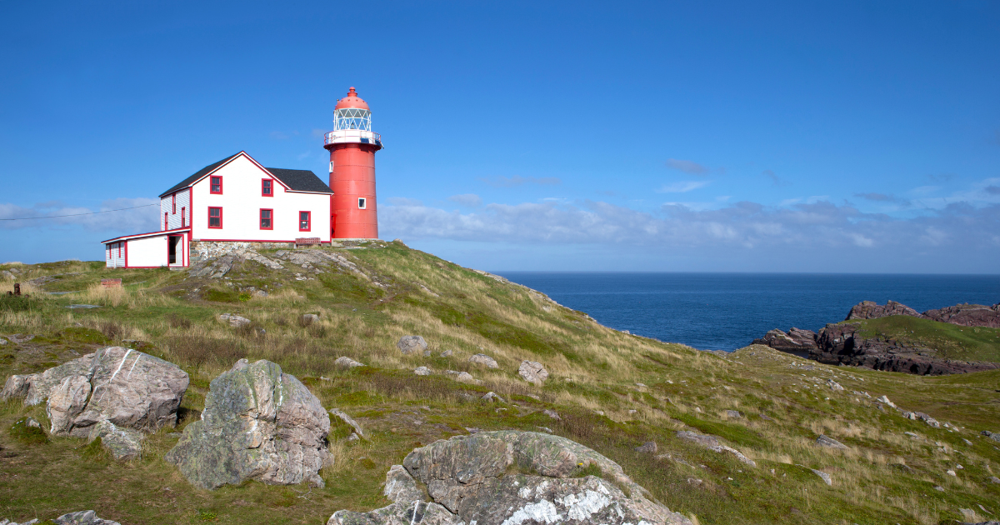

About Us
Welcome to Avalon Adventures, your local destination for unforgettable family adventures on the Avalon Peninsula of Newfoundland! We are a team of travel enthusiasts who are passionate about showcasing the beauty and wonder of this incredible region to families from near and far.

Our mission is to help families create lifelong memories while exploring the unique culture, history, and natural wonders of the Avalon Peninsula. We believe that travel is a transformative experience that has the power to bring families closer together and create lasting bonds.

At Avalon Adventures, we understand the unique needs of families, and we go above and beyond to make sure that every aspect of your trip is enjoyable and stress-free. From carefully selecting family-friendly accommodations to planning activities that are suitable for all ages, we take care of all the details so that you can focus on making memories with your loved ones.
Our team of expert guides is dedicated to ensuring that every moment of your adventure is fun, safe, and educational. Whether you're exploring the rugged coastline, discovering the unique flora and fauna of the region, or learning about the history and culture of the local communities, our guides will share their knowledge and expertise to make your experience unforgettable.

So, whether you're a local looking to explore the hidden gems of the Avalon Peninsula or a visitor eager to discover all that this region has to offer, let Avalon Adventures help you create the family vacation of a lifetime. Contact us today to start planning your next family adventure on the Avalon Peninsula of Newfoundland!

Mission Statement
Our mission at Avalon Adventures is to create memorable and immersive experiences that inspire families to connect with nature, each other, and the rich cultural heritage of the Avalon Peninsula. We strive to provide safe, educational, and enjoyable activities that promote environmental stewardship and foster a deeper appreciation for the natural world. Our goal is to be the premier family adventure company on the Avalon Peninsula, providing exceptional customer service and leaving a positive impact on the communities we serve.
Vision Statement
Our vision at Avalon Adventures is to be the leading family adventure company in Newfoundland, providing unparalleled outdoor experiences that connect families with nature, culture, and each other. We aim to inspire a sense of wonder, curiosity, and appreciation for the natural world, while fostering a community of like-minded adventurers who share our values of environmental stewardship, education, and fun. Through our commitment to excellence, innovation, and sustainability, we strive to create a positive impact on the lives of our guests, employees, and the communities we serve.